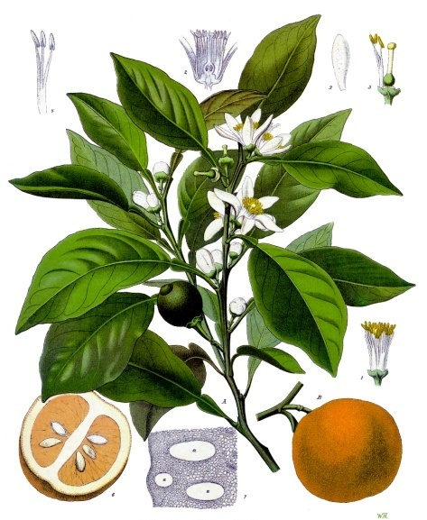

Zhǐshí · Immature bitter orange枳实
Aurantii Fructus Immaturus · Qi-regulating herbsAurantii Fructus Immaturus · 理气药




- Flavour · nature性味
- bitter, acrid, sour; slightly cold苦、辛、酸，微寒
- Channels归经
- Spleen, Stomach脾、胃经
- Direction升降浮沉
- Strong and descending; it breaks up qi stagnation, disperses accumulation, resolves phlegm and dissipates lumps; stir-frying tempers its harshness and its irritation of the stomach; compared with Zhi Qiao it acts more forcefully and leans towards directing qi downward and breaking up binding药性峻烈，主降，行气力强，能破气消积、化痰散痞；炒后药性缓和，减轻对胃的刺激；与同属的枳壳相比，枳实力猛，偏于下气破结
- Toxicity毒性
- Non-toxic无毒
- Dose (pharmacopoeia)用量（药典）
- 3–10 g (ceiling 10 g)（上限 10 克）
Decocted; stir-frying makes it milder and eases stomach irritation; larger doses are used in classical practice for organ prolapse and should be judged by a licensed practitioner煎服；炒后药性较缓，可减轻对胃的刺激；大剂量多用于脏器下垂，须由持照中医师判断 - Pregnancy孕期
- Caution in pregnancy孕妇慎用 Listed as a pregnancy caution in the Chinese Pharmacopoeia; the Health Canada monograph requires products to be labelled not to be used during pregnancy or breastfeeding. Do not self-prescribe in pregnancy; consult a licensed practitioner and an obstetric health professional.《中国药典》列为孕妇慎用；加拿大卫生部专论要求产品标注孕期或哺乳期勿用。孕期不要自行服用，须咨询持照中医师与产科医务人员。
- Health Canada加拿大卫生部
- Health Canada: monograph加拿大卫生部：有专论 The Health Canada NHPID Traditional Chinese Medicine Ingredients (TCMI) monograph (May 29, 2026) lists Zhi shi and Chao zhi shi (Fructus Aurantii Immaturus) from Citrus aurantium and Citrus sinensis in Table 1 (general medicinal ingredients); no Table 3 or Table 4 restrictions were found. All products must carry statements: do not use during pregnancy or breastfeeding; ask a health professional before use if taking prescription drugs, or if you have a serious condition or an acute infection; stop and seek care if symptoms persist or worsen.加拿大卫生部 NHPID「中药成分」（TCMI）专论（2026 年 5 月 29 日）收录 Citrus aurantium 与 Citrus sinensis 的枳实（Zhi shi；Chao zhi shi，Fructus Aurantii Immaturus），列在表 1（一般药用成分）；未见表 3、表 4 的限制。专论要求所有产品标注：孕期或哺乳期勿用；服处方药、有严重疾病或急性感染者用前问医务人员；症状持续或加重即停用就医。
- Conservation资源与保护
- A cultivated citrus crop; no conservation concern or CITES listing.栽培柑橘类作物，无濒危或国际贸易公约管制。
- Source来源
- English version comingCitrus aurantium L.（酸橙）及其栽培变种；Citrus sinensis Osbeck（甜橙）。芸香科植物酸橙及其栽培变种或甜橙的干燥幼果
Traditional actions and indications功效与主治（传统）
🏛 Traditional statements, not efficacy claims; the modern evidence is graded further down.以下为传统说法，不是疗效主张；现代证据见下文分级。
- Breaks up qi stagnation and disperses accumulation破气消积
- Resolves phlegm and dissipates lumps化痰散痞
Food accumulation with distension, fullness and pain; tenesmus in dysentery and constipation; phlegm and qi obstruction with chest bi and chest binding; organ prolapse (such as gastroptosis, rectal prolapse and uterine prolapse, usually combined with qi-supplementing herbs).积滞内停、痞满胀痛；泻痢后重、大便不通；痰滞气阻、胸痹、结胸；脏器下垂（如胃下垂、脱肛、子宫脱垂，常配补气药）。
How to recognise it怎么认
Growing植株 A small evergreen tree with long thorns on the branches; leaves are unifoliolate compound with a broadly winged, nearly inverted-heart-shaped petiole; white fragrant flowers in spring and round fruits that turn orange-yellow when ripe and taste very sour and bitter. The medicinal part is the unripe, naturally fallen green young fruit.常绿小乔木，枝有长刺；叶为单身复叶，叶柄有宽翅，近似倒心形；春季开白色芳香的花，果实球形，成熟后橙黄色，味极酸苦。药用的是尚未成熟、自行掉落的青绿色幼果。
Decoction pieces饮片 Irregular round thin slices or half-spheres; the outer surface is blackish-green or dark brownish-green, covered with granular bumps and dotted oil glands; the cut face has a blackish-green to dark brownish-green outer rind and a thick yellowish-white to yellow-brown middle layer with one or two rows of dotted oil glands at the edge, and brown segments inside. Hard. Clear fragrant smell, bitter and slightly sour taste.饮片为不规则的圆形薄片或半球形；外表面黑绿色或暗棕绿色，密布颗粒状突起和点状油室；切面外果皮黑绿色至暗棕绿色，中果皮黄白色至黄褐色，较厚，边缘有 1–2 列点状油室，瓤囊棕褐色。质坚硬。气清香，味苦、微酸。
No photo of the sliced immature fruit found on Commons (2026-11-25).缺枳实（幼果切片）饮片照（Commons 11-25 未检到）。
Processing炮制
- Raw Zhi Shi枳实（生用）：: Strongest at breaking qi stagnation but more irritating to the stomach, so the stir-fried form is more commonly used破气力强，偏于峻下；因对胃有刺激，临床较多用炒品
- Bran-fried Zhi Shi麸炒枳实：: Bran-frying tempers the harshness and reduces irritation, suited to accumulation and fullness in people with a weaker spleen and stomach麸炒后药性缓和，减少刺激，以免伤中，宜用于积滞痞满而脾胃较弱者
Cautions and incompatibilities使用注意与配伍禁忌
Use with caution in pregnancy (listed as a pregnancy caution in the pharmacopoeia); use with caution with a weak spleen and stomach; long-term use may deplete healthy qi, so those who are frail should not take it alone for long. Bitter orange (Citrus aurantium) extracts contain synephrine and have been used in weight-loss supplements; the content and safety of these slices cannot be assumed to be the same. People with cardiovascular disease, high blood pressure or on related medicines should ask a health professional first.孕妇慎用（药典列为孕妇慎用）；脾胃虚弱者慎用；久服可耗伤正气，体虚者不宜长期单用。同属的酸橙（Citrus aurantium）提取物含辛弗林，曾用于减肥类膳食补充剂，本饮片的含量与安全性不能直接等同；有心血管疾病、高血压或服用相关药物者用前请先咨询医务人员。
Interactions with medicines与西药的相互作用
In the sources retrieved here, no human evidence of interactions between Zhi Shi slices and specific Western drugs was found, so no entries are listed. One study found the furanocoumarin content of bitter orange extracts (Advantra Z) too low to markedly affect drug metabolism, but that applies only to those extracts and cannot be extended to Zhi Shi slices. People taking medicines should ask a doctor or pharmacist.本次检索到的来源中，没有找到枳实饮片与具体西药相互作用的人体证据，因此不列条目。一项研究测得酸橙提取物（Advantra Z）的呋喃香豆素含量很低，不足以明显影响药物代谢，但这只涉及特定提取物，不能外推到枳实饮片。正在服药者请咨询医师或药师。
Modern research, graded现代研究（分级）
- E2 In a multicentre, randomised, double-blind, placebo-controlled phase III trial in functional dyspepsia, a flavonoid tablet made from immature bitter orange fruit showed clear symptom benefit with a favourable safety profile; the study tested a flavonoid tablet, not decocted slices.枳实黄酮提取片用于功能性消化不良的多中心随机双盲安慰剂对照三期试验中，对症状有明显改善，安全性良好；研究对象是枳实黄酮片，不是煎煮的饮片。
- E2 Another multicentre, double-blind, double-dummy phase III trial found that the flavonoid tablet had similar efficacy to domperidone after 4 weeks in functional dyspepsia and possibly a better safety profile; again the product studied was the flavonoid tablet, not the slices.另一项多中心双盲双模拟三期试验显示，枳实黄酮片治疗功能性消化不良 4 周后的疗效与多潘立酮相近，安全性可能更好；研究对象同样是枳实黄酮片，不是饮片。
- E3 Extracts of Citrus aurantium have been used in weight-loss supplements; a review reported that synephrine has lipolytic effects in human fat cells only at high doses and octopamine has none; the subject is bitter orange supplement constituents, not Zhi Shi slices.酸橙（Citrus aurantium）的提取物曾用于减肥类膳食补充剂；综述指出辛弗林仅在高剂量下对人脂肪细胞有脂解作用，章鱼胺则没有；研究对象是酸橙补充剂成分，不是枳实饮片。
- E4 In animal experiments, flavonoids from the immature fruit showed effects on gastrointestinal motility and on coagulation; these are animal findings and cannot be carried over to human use.枳实（幼果）的黄酮类成分在实验中表现出胃肠动力调节与抗凝血作用，为动物实验结果，不能推断到人体使用。
- E2 Small randomised trials of inhaled bitter orange essential oil (not Zhi Shi slices) have been done in patients undergoing coronary angiography or intervention and in chemotherapy patients, looking at anxiety, sleep and nausea; the subject is the essential oil, which differs from oral slices, so these are supporting evidence only.酸橙精油（不是枳实饮片）的吸入芳香疗法在冠脉造影或介入患者、化疗患者中有小型随机试验，涉及焦虑、睡眠与恶心呕吐；这些研究对象是精油，与口服饮片不同，只能作旁证。
In the classics古籍原文
「除寒熱熱結，止利。長肌肉，利五臟，益氣輕身」——神农本草经
Shennong Bencao Jing (Divine Farmer's Materia Medica)
The Shennong Bencao Jing says Zhi Shi 'removes cold-heat binding and stops diarrhoea'. Later physicians used it to break up qi stagnation, reduce accumulation and transform phlegm; the distinction between Zhi Shi and Zhi Qiao was refined only later, and early materia medica used 'Zhi Shi' more broadly.《神农本草经》说枳实「除寒热热结，止利」。后世用它破气消积、化痰散痞；枳实与枳壳的区分是后世才逐渐细化的，早期本草所说的「枳实」范围较宽。
Where it is used: the web串联：它在哪些方里、连到哪里
Classical formulas (Shanghan, Jingui)经方（伤寒、金匮）
| Formula方 | Role角色 | Dose: original / today剂量：原书／今用 | Partners in the formula同方配伍 |
|---|---|---|---|
| Major Bupleurum Decoction大柴胡汤 | Minister臣 | original text: see the Chinese original四枚（炙） | Cháihú (Bupleurum root)柴胡 · Huángqín (Baikal skullcap root)黄芩 · Báisháo (White peony root)白芍 · Bànxià (Pinellia tuber)半夏 · Shēng Jiāng (Fresh ginger rhizome)生姜 · Dà Zǎo (Jujube fruit)大枣 · Dàhuáng (Rhubarb root and rhizome)大黄 |
| Major Order the Qi Decoction大承气汤 | Minister臣 | original text: see the Chinese original五枚（炙） | Dàhuáng (Rhubarb root and rhizome)大黄 · Hou Po (magnolia bark)厚朴 · Mang Xiao (mirabilite, sodium sulfate decahydrate)芒硝 |
| Hemp Seed Pill麻子仁丸 | Assistant佐 | original text: see the Chinese original半斤（炙） | Huo Ma Ren (hemp seed)火麻仁 · Kǔ Xìng Rén (Bitter Apricot Seed)苦杏仁 · Báisháo (White peony root)白芍 · Dàhuáng (Rhubarb root and rhizome)大黄 · Hou Po (magnolia bark)厚朴 |
| Frigid Extremities Powder四逆散 | Assistant佐 | original text: see the Chinese original各十分 | Cháihú (Bupleurum root)柴胡 · Báisháo (White peony root)白芍 · Gāncǎo (Licorice root)甘草 |
| Minor Order the Qi Decoction小承气汤 | Assistant佐 | original text: see the Chinese original三枚（大者，炙） | Dàhuáng (Rhubarb root and rhizome)大黄 · Hou Po (magnolia bark)厚朴 |
Later formulas (Song to Qing)时方（宋元明清）
| Formula方 | Role角色 | Dose: original / today剂量：原书／今用 | Partners in the formula同方配伍 |
|---|---|---|---|
| Tangerine Seed Pill橘核丸 | Assistant佐 | original text: see the Chinese original此处未单列分量（须对纸本） | Ju He (tangerine seed)橘核 · Chuan Lian Zi (melia fruit)川楝子 · Hai Zao (sargassum)海藻 · Kun Bu (kelp)昆布 · Hai Dai (sea tangle)海带 · Tao Ren (peach kernel)桃仁 · Yan Hu Suo (corydalis tuber)延胡索 · Hou Po (magnolia bark)厚朴 · Mu Tong (akebia stem; never the aristolochia species)木通 · Rou Gui (cinnamon bark)肉桂 · Mùxiāng (Costus Root)木香 |
Folk and single-herb remedies偏方、验方、单方
| Formula方 | Use用法 | Self-use能否自用 |
|---|---|---|
| Vinegar-heated bitter orange compress (urticaria)醋炙枳实熨（皮肤风疹） | External use外用 | See a doctor first先看医生再说 |
Patterns reached through these formulas经由这些方连到的证
Exam notes (HER)考点（HER）
HER essentials: (1) Zhi Shi and Zhi Qiao come from the same plant, but Zhi Shi is the immature fruit and breaks qi forcefully while Zhi Qiao is the nearly ripe fruit and moves qi more gently; (2) use with caution in pregnancy; (3) typical pairings with Bai Zhu (Zhi Zhu Wan), with Hou Po and Da Huang (Xiao and Da Cheng Qi Tang), and with Xie Bai and Gui Zhi (Zhi Shi Xie Bai Gui Zhi Tang); (4) stir-frying tempers it and reduces stomach irritation.HER 考点：①枳实与枳壳同出一物，枳实为幼果、力猛破气，枳壳为近成熟果实、力缓行气宽中；②孕妇慎用；③枳实配白术（枳术丸）、配厚朴大黄（小承气汤、大承气汤）、配薤白桂枝（枳实薤白桂枝汤）；④炒用缓和药性、减少胃刺激。
Sources依据
- Chinese Pharmacopoeia Commission. Pharmacopoeia of the People's Republic of China, 2020 edition, vol. I国家药典委员会《中华人民共和国药典》2020 年版一部
- Zhong Gansheng (ed.). Chinese Materia Medica (national TCM higher-education textbook series)钟赣生主编《中药学》（全国中医药行业高等教育规划教材）
- Health Canada, NHPID monograph: Traditional Chinese Medicine Ingredients (TCMI), May 29, 2026 ↗
- NCCIH. Bitter Orange ↗
- Yang et al. Efficacy and Safety of Aurantii Fructus Immaturus Flavonoid Tablets in Patients with Functional Dyspepsia: A Multicenter, Randomized, Double-Blind, Placebo-Controlled Phase III Clinical Trial. Chin J Integr Med. 2026 ↗
- Wei et al. Efficacy and safety of Aurantii Fructus Immaturus flavonoid Tablets vs. domperidone for functional dyspepsia: a multicenter, double-blind, double-dummy, randomized controlled phase III trial. Acta Gastroenterol Belg. 2024 ↗
- Fugh-Berman et al. Citrus aurantium, an ingredient of dietary supplements marketed for weight loss: current status of clinical and basic research. Exp Biol Med (Maywood). 2004 ↗
- Stohs et al. Absence of furanocoumarins in Advantra Z® (Citrus aurantium, bitter orange) extracts. J Diet Suppl. 2014 ↗
- Tan et al. Anti-coagulative and gastrointestinal motility regulative activities of Fructus Aurantii Immaturus and its effective fractions. Biomed Pharmacother. 2017 ↗
- Moradi et al. Essential Oil from Citrus aurantium Alleviates Anxiety of Patients Undergoing Coronary Angiography: A Single-Blind, Randomized Controlled Trial. Chin J Integr Med. 2021 ↗
- Asgari et al. Comparing acupressure with aromatherapy using Citrus aurantium in terms of their effectiveness in sleep quality in patients undergoing percutaneous coronary interventions: A randomized clinical trial. Complement Ther Clin Pract. 2020 ↗
- Tabei et al. The effect of Citrus aurantium inhalation aromatherapy on chemotherapy-induced nausea and vomiting in breast cancer patients: a randomized controlled trial. BMC Complement Med Ther. 2025 ↗